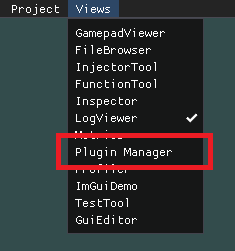

Getting Started
Full article: Build Instructions
Starting the Engine
When starting the engine the first time, you are presented with a blank screen and only two items in the menu bar and the Log Viewer. By default all plugins are disabled, except those that are dependencies of the launcher itself. To get started you can open the Plugin Manager tool and enable all plugins you intend to use. To do this open the Plugin Manager and select the necessary plugins to work with.

Afterwards, you should create/load your project by providing the engine with the root folder of your game.